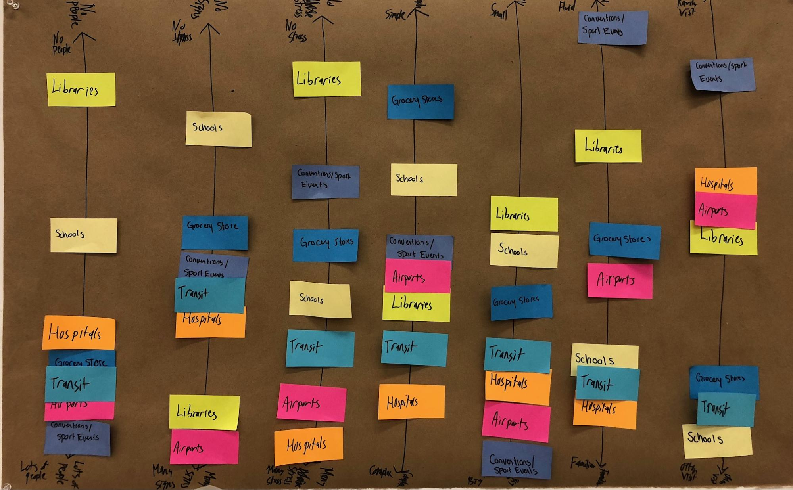
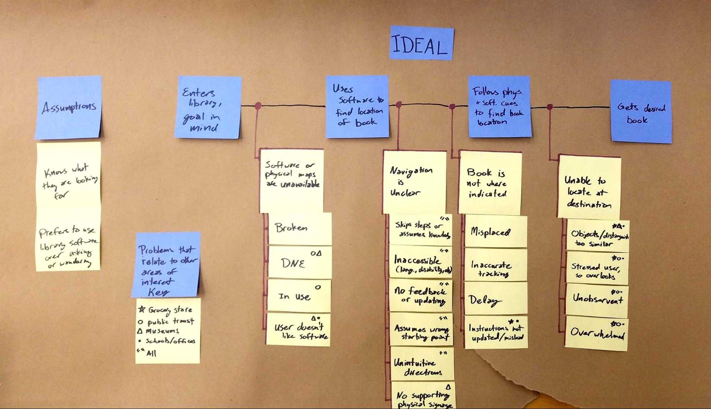
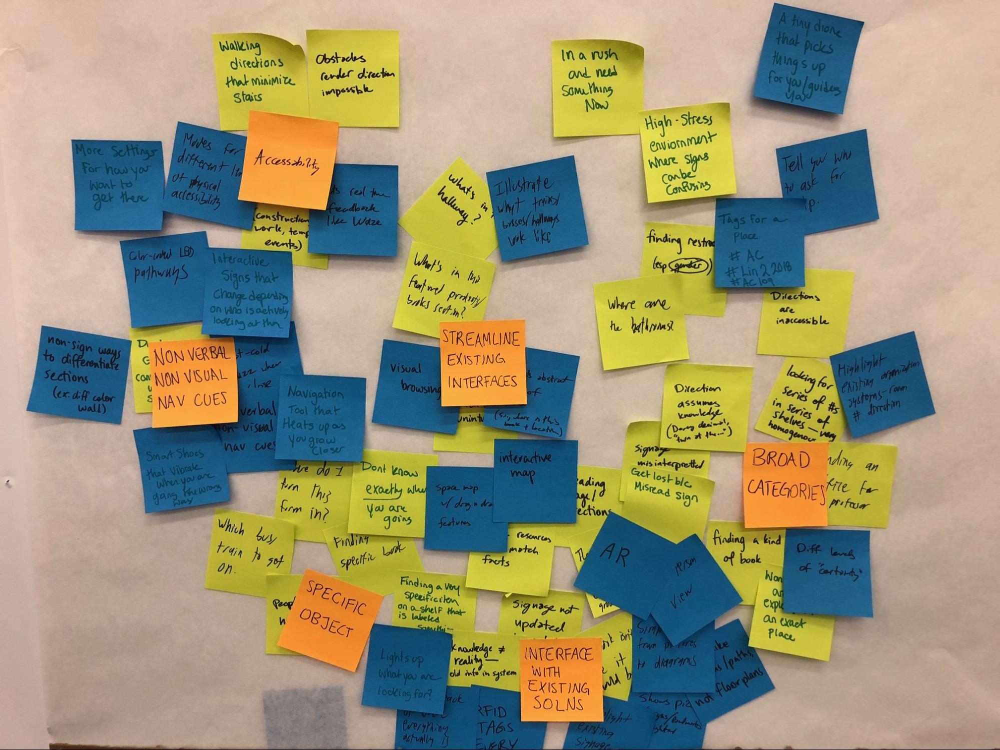

Design Brief
A more detailed look at users, opportunity, and chances
Attempting to find your way in an unfamiliar place is a frustrating endeavor, particularly when there is not someone nearby who can provide immediate help (such as a librarian or curator). Thus, by addressing the issue of small-scale wayfinding, we will help reduce the stress of going into strange areas, help people who are in a hurry find what they need quickly, and enhance the experience of physical signage. Finally, our project will provide a wayfinding method that is less intrusive into both the lives of the user and those around them who may have otherwise been called upon to give directions, distracting them from other tasks or conversations.
Our product will focus on users who need to find their way through dense or complicated “indoor” environments with a specific goal in mind. For example, a library patron searching for a specific book, a visitor to a hospital searching for a specific room, a tourist navigating a new mass transit system, or a student looking for their professor’s office or classroom. We considered the properties that many of these navigation experiences/spaces share, and captured our thoughts with this set of axes: 
We concluded that, in general, users tend to be unfamiliar with the spaces they are navigating, and the spaces themselves are often (but not always) somewhat fluid — books can be moved as sections shift around, or grocery store aisles can be reconfigured as new products are featured. The spaces themselves also tend to have a fair amount of physical signage, due in part to the spaces themselves being difficult to navigate, but this signage is often difficult to understand.
Based on our own experiences and two interviews, we mapped the way these processes tend to progress (and be interrupted) in a workflow diagram: 
Users enter with a goal in mind, rely on an external source of information to discover where to head, rely on external signage or software guidance to get to the right place, then manually search to find their final destination. There are many junctions where this process can be interrupted, many of which hinge on the available information being incorrect or misleading. If this process is interrupted in this fashion, it often results in the entire process starting over, and a great deal of frustration for the user.
Requirements
From here, we brainstormed a collection of more specific problems related to our project, clustered them, brainstormed possible solutions, clustered them as well, then labeled the major clusters that emerged. This process is captured with this artifact: 
After this discussion, we concluded that our project should not replace physical signage, but augment it where such signage already exists. It also must be intuitive to use (both for entering one’s goal and navigating to it) and easy to update if any changes in the path arise. It must not exclude user groups or common use cases by the way it passes along information (e.g. it should not be solely visual or solely auditory, as this limits who can use the software in what situations). It also must work in situations where GPS currently is not sufficient, while still providing some sort of feedback as the user navigates towards their goal.
Naive design ideas
We have several naive design ideas that we believe could be useful. To solve the problem of inadequate or misleading signage, we could create a system of kiosks and screens. The user could enter their destination in the kiosk and then the screens could use facial recognition software to determine who is looking at them, what they said they were looking for, and which direction they should go to reach their destination. As people pass the signs, they update. This would enable people to only focus on the needed directions so they are not confused or slowed down by inapplicable signs. Another idea is small drone leaders. The user would use an interface to determine what they are looking for then a small drone arrives and leads them to the general area where that could be found. The drone could also scan the area locating various objects updating its system. This could solve the problem of fluid space navigation because the feedback from the drone would feed back into the navigation system helping it provide more accurate locations. We also are considering creating a heated or haptic feedback object that would change its behavior as the user approaches the general area being sought. This is useful for people with visual or auditory impairments and is perfect for noisy or quiet spaces. It also allows for navigation that does not distract the user from conversations or sight-seeing.
Impact
The impact of our solution can be fairly substantial. Many people often lose their way in indoor spaces. Consumer-available GPS navigation systems are often only accurate to 30 feet, and this accuracy worsens near and inside buildings. This means GPS is insufficient for navigating users to specific shelves or places in a building, or to a different floor. There are many current places with inadequate navigation assistance. For example, many hospital floor maps, room numbers and wing designations are hard to comprehend or misleading. There can be so many points of interest crammed into a single building that many physical signage systems are almost as confusing as no signage. Many of these buildings, such as hospitals, are often high stress environments that make it more difficult to process directions. Our project could simplify and ease the experience of users in many indoor spaces, from grocery stores to hospitals, by enhancing understanding and discoverability of spaces and layout, particularly the specific place the user is seeking.
Limitations
Due in part to our team’s rough start, we have limited evidence. While we are confident, from our personal experiences and word of mouth, that there exist users who would find this project compelling and impactful, we were able to arrange only two interviews, and those were with librarians, not the type of library user we would be designing for. Additionally, our interviews were specific to libraries as spaces, but we have not defined our users as specifically library patrons. Finally, we are working in a space — wayfinding — that is relatively well defined for non-software approaches, and we have not done significant research in this area.
Effort Distribution
We feel our efforts are fairly well distributed and match our expectations given commitment levels to the course. Kaitlyn wasn’t part of our team for the project brief and initial consent narrative. Louise and Kaitlyn took on website production and Coleman and MJ were responsible for larger sections of the design brief to balance that.